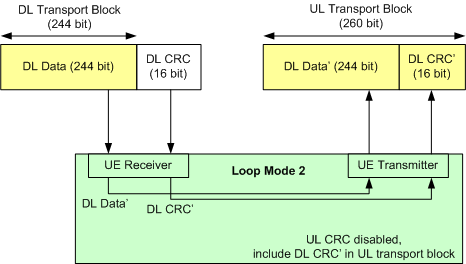
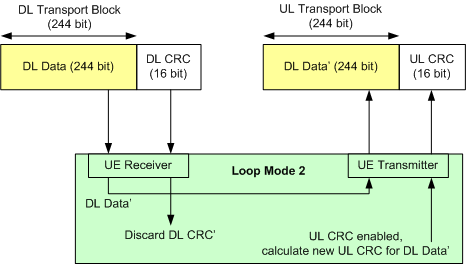
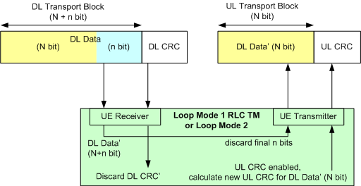

To measure the bit error rate (BER), block error ratio (BLER) and data block error rate (DBLER), configure an RMC connection with test loop and without HSPA test mode. This section describes several suitable RMC and loop configurations.
The table below provides an overview of the configurations. For each configuration, it lists the results that can be measured and the required RMC and loop settings. For a description of the corresponding parameters, refer to "Test Mode Connection Settings".
In reduced signaling mode, loop mode 2 with or without UL CRC is supported. Loop mode 1 is not supported.
Below the table the configurations are described in detail.
Configuration | Measured results | Test mode | RMC data rate | Loop mode 1 RLC | Loop mode 2 Sym. UL CRC |
|---|---|---|---|---|---|
1 | BER, DBLER, DL BLER | Loop mode 2 | UL=DL | n/a | Disabled |
2 | BER, DBLER, UL BLER | Loop mode 2 | UL=DL | n/a | Enabled |
3 | BER, DBLER | Loop mode 2 | UL < DL | n/a | Setting ignored, UL CRC enabled |
Loop mode 1 | Transparent | n/a |
If the UE does not close the loop and sends other data instead of looping back the received data, it results in an acquisition error (reliability indicator value 7). For the BER measurement, an acquisition error indicates that the UL signal was decoded successfully, but the expected bit pattern was not found. |
This configuration is described in 3GPP TS 34.109 for BLER measurements. Its purpose is to assess block errors originating in the downlink path. BER and DBLER can also be measured.
UL and DL data rate are equal. The UL transport block is bigger than the DL transport block. The UL CRC is disabled. The DL CRC' (including a possible error produced in the UE receiver) is incorporated into the UL transport block and received by the tester. This configuration is illustrated below for a 12.2 kbps RMC.

- DL BLER: The R&S CMW checks whether the looped-back DL CRC' matches the looped-back DL data' and divides the number of detected block errors by the total number of transferred blocks.
- BER, DBLER: The R&S CMW compares the looped-back DL data' to the transmitted DL data.
This configuration assumes that no errors are introduced in the uplink path. To verify this assumption, the UL BLER can be measured using configuration 2.
This configuration can be used to assess block errors originating in the uplink path. BER and DBLER can also be measured.
UL and DL data rate are equal. The UL and DL transport block size are also equal. The UL CRC is enabled. This configuration is illustrated below for a 12.2 kbps RMC.

- UL BLER: The R&S CMW compares the looped-back DL data’ with the UL CRC calculated by the UE (UL CRC check). The UL BLER is equal to the ratio of blocks with failed UL CRC check to the total number of blocks. The result is independent of errors introduced in the downlink path.
- DBLER: The R&S CMW checks whether the UL CRC calculated by the UE is equal to the DL CRC. It divides the number of detected data block errors by the total number of transferred blocks.
- BER: The R&S CMW compares the looped-back DL data' to the transmitted DL data.
To ensure that the DL results BER/DBLER are not distorted by transmission errors in the UL, blocks with failed UL CRC check are not considered for the calculation of BER/DBLER.
Receiver quality tests at high data rates are to ensure that the UE receiver performance does not deteriorate under stress conditions. With asymmetric RMC data rates, the BER and DBLER can be measured even if the UE does not support high data rates in the uplink.
The transport block size increases with the data rate. Thus both the UL data rate and the UL transport block size are smaller than the DL data rate and DL transport block size. The UL CRC is enabled. Both loop mode 1 with RLC transparent mode and loop mode 2 can be used.
Assume that the DL data rate corresponds to N + n information bits per block, the smaller UL data rate to N information bits per block. Out of the N + n received bits, the UE loops back N bits plus a new UL CRC.

- BER: The R&S CMW compares the looped-back DL data' (N bit) to the transmitted DL data (N bit). Assuming statistical independence of the bit errors the result is equal to the BER of all N + n data bits.
- DBLER: The DBLER is calculated as the ratio of the number of looped-back data blocks with bit errors to the total number of looped-back data blocks. The smaller UL block size means that this result is a lower limit for the DBLER that would be obtained by looping-back and evaluating all N + n data bits.